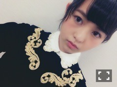
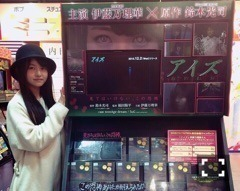
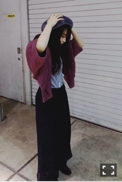
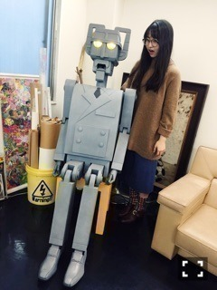

| 2015/12 05 Sat | トイレットペーパー 。682回目 |

2015 FNS歌謡祭で着用した衣装！
ベロア素材と襟元がお上品です。
スカートの裾が額縁で可愛かった。
着た途端おしとやかに！
衣装マジックヽ(ﾟ､｡)ﾉ
また着る機会があればいいな。

耳ぴーん
2日に発売された映画『アイズ』。
SHIBUYA TSUTAYAさんが
素敵なディスプレイパネルを
作ってくださいました、、！
一昨日おじゃましました！

一際おどろおどろしい。
注目ポイントがね！タイトルが！
立体的になっている上に
血しぶきがね！！！！
してあったの！横から見ると
わかるんだけど、、
もちろんポップやポスターも
全部感激してるんだけどね。
血しぶきがね、、
販売、レンタルともにポップを
書かせていただいた！目描いた！
サインプレゼントキャンペーンとか
とかやってます！
このディスプレイは14日までです
それにしても、主演映画って大きい。
また経験できる時を楽しみにしたい。

12月の告知
12月2日 映画「アイズ」DVD/Blu-ray
12月3日 日経エンタテインメント！アイドルSpecial2016
12月4日 MdN連載
12月6日 NHK総合 『グランプリ決定！第１３回ミニミニ映像大賞』午後4:00〜
12月7日 週刊ビッグコミックスピリッツ
12月18日 単行本「乃木坂46物語」
12月19日 PF vol.2
12月23日 MUSIC VIDEO集「ALL MV COLLECTION〜あの時の彼女たち〜」
12月25日 FLASHスペシャル
12月29日 BUBKA
12月発売 melantrick photo book 【mirror】
お馴染みの日経エンタ。
誌面でも伝わるうきうき感。
そして、発売されたMdN。
お相手は大好きなAPOGEEさんや
サカナクションさんのMV等を
多く手掛けている映像作家の
田中裕介さん。
サカナクションMVの絵コンテ
見せていただきましたが
とてもおしゃれだったなあ
細部までその通りに
映像になっていました。
途中デザインの本質的な話になり、
夢中になって聞いていました。
作品をつくる上でとても大事なこと。
回を重ねる毎に
学ぶことが増えてゆきます、、
田中さん、ありがとうございました！
あ、オススメの本を教えてくださった
のですが、早速そのグッズの
マグカップを購入しました。ふふ
おしゃれさんだ

TOWA TEIさんのMVに
登場していたロボット！
目の光り具合が調節できる。
明日放送されるミニミニ映像大賞は
ついにグランプリの発表です！
収録楽しかったです！
年末にたくさん(´* >*｀)
チェックよろしくお願いします。
まりか
コメント(438)
2015/12/05 21:12